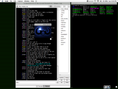
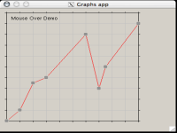
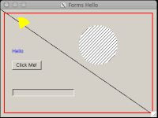
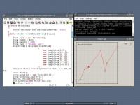
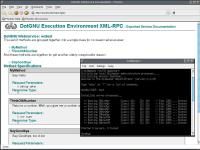
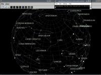

Follow this link for a table of contents.
Follow this link for a version of this page with improved navigation for graphical browsers.


Screenshots Index
DotGNU Portable.NET's System.Windows.Forms running on an IPaq

DotGNU Portable.NET's System.Windows.Forms running on OS X

DotGNU Portable.NET's System.Windows.Forms running on OS X

DotGNU Portable.NET's System.Windows.Forms running on OS X

A demo of Portable.NET's Windows.Forms

DGEE, The DotGNU Execution Environment, has booted

Screenshot of SkyNET, a sky chart program for .NET

You are invited to add your comments concerning this
at the appropriate
page of the DotGNU Wiki
Verbatim copying and distribution of this entire article are
permitted in any medium or format, provided this notice is
preserved.
This page is
maintained by Norbert Bollow <nb@cisto.com>
with support from the DotGNU
Website mailing list.